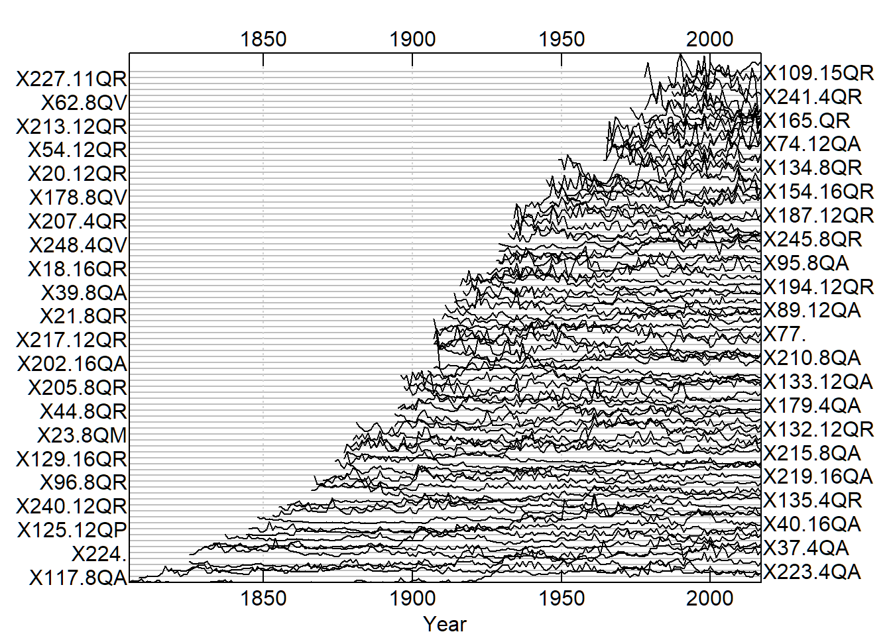
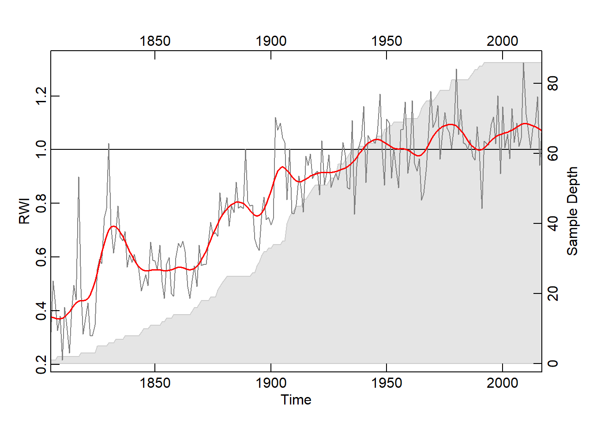

Building, Crossdating, and Analyzing a Tree Ring Chronology from Geneseo, NY
Greg Bream
Introduction
The Genesee Valley of western New York is known for its historic oak trees. Building a mean-value chronology of oaks cored in this area will allow me to infer the general environmental conditions at a given time. Crossdating will allow me to be more confident in the dates assigned and yield accuracy to the values in the chronology. It will also allow for more accurate detection of climate signal. Droughts, for example can be inferred from years with consistently narrow rings within the chronology. This can be explored further by crossdating with the Palmer drought severity index. Identifying growth releases of the cored trees will allow me to identify canopy disturbance events using time periods with consistently high values. This analysis will help to infer the mechanisms behind growth patterns in oak trees in the study area.
Materials and methods
Materials:
- Personally collected tree ring-width data of oak trees in the form of CSV and compact files
Plotting the Tree-Ring Series
library(dplR)
QuercusMaster <- read.rwl("https://raw.githubusercontent.com/geo511-2019/2019-geo511-project-gbream/master/data/QuercusMaster.csv")## Attempting to automatically detect format.
## Detected a csv file.plot(QuercusMaster, plot.type = "spag")
Detrending the Series
In dendrochronology, detrending is the fitting of a curve to the ring-width data to remove patterns unique to each tree. This includes the effects of tree age, disturbance events, and other growth trends due to site-specific drivers of change. I chose to use a conservative approach to detrending the series using detrend(). The method argument specifies the detrending method, which in this case is fitting a negative exponential curve to the series. The correlation of each series with the master is calculated using interseries.cor() and the results are in the table below. Values of .32 or higher indicate a significant correlation and are in green.
QuercusMaster.rwi <- detrend(rwl = QuercusMaster, method = "ModNegExp")
Interseries_Cor <- interseries.cor(QuercusMaster.rwi, prewhiten=TRUE,
method="spearman")
#Changing column names
names(Interseries_Cor)[1]<-"Correlation"
names(Interseries_Cor)[2]<-"P-value"
library(kableExtra)
library(magick)
kable(Interseries_Cor) %>%
kable_styling(bootstrap_options = "striped", full_width = T, position = "left", font_size = 13, fixed_thead = T) %>%
row_spec(which(Interseries_Cor$Correlation >= .32), bold = T, color = "green", background = NULL) %>%
scroll_box(width = "700px", height = "300px")| Correlation | P-value | |
|---|---|---|
| X15.16QA | 0.5211277 | 0.0000000 |
| X16.16QA | 0.2931973 | 0.0016691 |
| X35.4QA | 0.3954946 | 0.0000844 |
| X37.4QA | 0.3945181 | 0.0000000 |
| X38.8aQA | 0.5068413 | 0.0000000 |
| X39.8QA | 0.5373408 | 0.0000000 |
| X40.16QA | 0.3909089 | 0.0000001 |
| X74.12QA | 0.4909964 | 0.0001745 |
| X88.12QA | 0.5847574 | 0.0000000 |
| X89.12QA | 0.6272679 | 0.0000000 |
| X95.8QA | 0.4954436 | 0.0000008 |
| X117.8QA | 0.2577230 | 0.0001388 |
| X133.12QA | 0.4783419 | 0.0000001 |
| X138.8QA | 0.4106797 | 0.0000003 |
| X179.4QA | 0.4750816 | 0.0000000 |
| X184.4QA | 0.5299240 | 0.0000000 |
| X202.16QA | 0.2773888 | 0.0017246 |
| X206.12QA | 0.3165883 | 0.0000160 |
| X210.8QA | 0.5814753 | 0.0000000 |
| X215.8QA | 0.3999653 | 0.0000036 |
| X219.16QA | 0.5002709 | 0.0000000 |
| X223.4QA | 0.3185586 | 0.0000027 |
| X228.16QA | 0.5666847 | 0.0000000 |
| X233.12QA | 0.2596662 | 0.0007150 |
| X247.16QA | 0.5748401 | 0.0000000 |
| X261.16QA | 0.5524407 | 0.0000000 |
| X269.12QA | 0.5729386 | 0.0000000 |
| X278.16QA | 0.4700855 | 0.0002222 |
| X18.16QR | 0.5075225 | 0.0000006 |
| X20.12QR | 0.5072344 | 0.0000123 |
| X21.8QR | 0.3794086 | 0.0000769 |
| X44.8QR | 0.4398490 | 0.0000004 |
| X54.12QR | 0.5714932 | 0.0000085 |
| X63.8QR | 0.4002801 | 0.0089204 |
| X94.16QR | 0.5275362 | 0.0001214 |
| X96.8QR | 0.5689734 | 0.0000000 |
| X109.15QR | 0.4377470 | 0.0189630 |
| X129.16QR | 0.3049109 | 0.0001399 |
| X132.12QR | 0.5591091 | 0.0000000 |
| X134.8QR | 0.3852779 | 0.0015032 |
| X135.4QR | 0.1989158 | 0.0064553 |
| X140.12QR | 0.3281655 | 0.0017506 |
| X144.4QR | 0.3777065 | 0.0001852 |
| X154.16QR | 0.4709075 | 0.0000352 |
| X165.QR | 0.4996476 | 0.0003252 |
| X172.12QR | 0.6394089 | 0.0001299 |
| X180.12QR | 0.5312440 | 0.0000023 |
| X181.8QR | 0.3418697 | 0.0001222 |
| X182.12QR | -0.2876847 | 0.9352792 |
| X183.8QR | 0.1762785 | 0.1100210 |
| X187.12QR | 0.5288312 | 0.0000007 |
| X194.12QR | 0.5147144 | 0.0000001 |
| X205.8QR | 0.3111289 | 0.0003203 |
| X207.4QR | 0.4076107 | 0.0000901 |
| X213.12QR | 0.5977449 | 0.0000134 |
| X217.12QR | 0.5007193 | 0.0000000 |
| X227.11QR | 0.3449328 | 0.0393133 |
| X229.4QR | 0.4318500 | 0.0000019 |
| X236.12QR | 0.3297571 | 0.0204466 |
| X237.8QR | 0.3195076 | 0.0000058 |
| X238.8QR | 0.4816337 | 0.0000000 |
| X239.4QR | 0.4613923 | 0.0000576 |
| X240.12QR | 0.3125948 | 0.0000346 |
| X241.4QR | 0.4181452 | 0.0100092 |
| X245.8QR | 0.6570842 | 0.0000000 |
| X273.8QR | 0.5701357 | 0.0000074 |
| X276.4QR | 0.2664577 | 0.0061511 |
| X277.12QR | 0.5290500 | 0.0000002 |
| X46.8QV | 0.3740536 | 0.0000027 |
| X53.16QV | 0.5138273 | 0.0000027 |
| X62.8QV | 0.2898785 | 0.0368703 |
| X65.8QV | 0.4295148 | 0.0001465 |
| X178.8QV | 0.4058685 | 0.0002475 |
| X230.16QV | 0.2982466 | 0.0000563 |
| X248.4QV | 0.5166778 | 0.0000002 |
| X274.8QV | 0.5265958 | 0.0000000 |
| X125.12QP | 0.4417841 | 0.0000000 |
| X22.12QM | 0.3264341 | 0.0000251 |
| X23.8QM | 0.1442107 | 0.0469577 |
| X79.8QM | 0.3134091 | 0.0005635 |
| X36.16QMu | 0.4834440 | 0.0000001 |
| X77. | 0.4293064 | 0.0000022 |
| X92. | 0.1105140 | 0.1186142 |
| X118. | 0.2866655 | 0.0007125 |
| X224. | 0.0769477 | 0.1461654 |
| X235. | 0.3944469 | 0.0000000 |
Mean Value Chronology
Building a Mean Value Chronology out of the .rwi object created above using chron(). By default, chron() uses Tukey’s biweight robust mean, which is unaffected by outliers and thus is a more accurate representation of the data. The plot below plots the newly created mean chronology. The second and third arguments of plot(), add.spline and nyrs add a smoothing spline with a wavelength (period) of 20 years.
QuercusMaster.crn <- chron(QuercusMaster.rwi, prefix = "CAM")
plot(QuercusMaster.crn, add.spline=TRUE, nyrs=20)
Crossdating
Crossdating is of absolute importance in dendrochronology. It involves identifying similar patterns in radial grown between multiple trees and applying those patterns to trees of unknown dates in order to ascertain the correct tree age. In short, it assures that you are assigning the correct calendar year to the growth rings of each tree. In the case of my cores, I am already able to accurately assign dates, since the trees were living at the time of coring and I have the dates of measurement. That being said, there is still a lot to be gained from crossdating in this case, including assigning dates to future cored trees in the area, and strengthening detection of environmental signal. Crossdating is done with the function corr.rwl.seg(). The argument seg.length specifies the length of the segments to crossdate. I chose the segment length to be 50 years, which is likely the longest segment that I should use, since the average series length is approximately 100 years. By default, the overlap for the segments is half of the segment length, 25 years. The pcrit argument specifies the critical value for the correlation. The blue segments on the first plot below represent a significant correlation for that segment, while the red represent low correlations and thus, potential crossdating issues. The issues in this case are likely due to the broad range of conditions that the series within this specific chronology come from across the Genesee Valley.
Cross_SEGS <- corr.rwl.seg(QuercusMaster, seg.length = 50, pcrit = 0.10)
Growth Releases
Growth releases are periods in a trees growth where ring-width is at least 25% greater than mean of both the preceding and subsequent 10 year period, and lasting several years (Nowacki & Abrams, 1997). A change of 50% signifies a major release. A growth release means that some type of disturbance event occurred near the tree. This includes death of nearby trees due to natural or human-driven causes. The function below, growthAveragingALL(), calculates growth releases in each series and produces graphs for each of the series in the chronology. One thing that stands out to me is that multiple trees experienced growth releases at 1991. Through taking measurements, 1991 was deemed what is called an indicator year. That is, a year that is consistently narrow across the majority of the tree cores. Through crossdating with the Palmer drought severity index (PDSI), this lack of growth was likely due to drought. What I find interesting about this is that three of the series, x133-12QA, x165-QR, and x187-12QR experienced significantly increased growth during this time. It is likely that these trees were smaller and in the understory, and death of larger tree or trees in the canopy lead to in increase in available light and consequently, an increase in growth rate.
library(TRADER)
library(jpeg)
Quercus_nopartials <- read.rwl("https://raw.githubusercontent.com/geo511-2019/2019-geo511-project-gbream/master/data/Quercus_Nopartials.csv")## Attempting to automatically detect format.
## Detected a csv file.#Radial Growth Averaging for Quercus (all)
growthAveragingALL(Quercus_nopartials, releases = NULL, m1 = 10, m2 = 10, buffer = 10, prefix = "ga", drawing = TRUE, criteria = 0.25, criteria2 = 0.5, gfun = mean, length = 5, storedev = jpeg)## [1] "## Nowacki & Abrams analysis!"
## [1] "Criteria 0.25 Criteria2 0.5 m1 10 m2 10 Buffer 10 Length 5"
## [1] "Total number of releases >= 0.25 & < 0.5 is 43"
## inyears
## 1824 1841 1842 1859 1863 1875 1882 1894 1901 1924 1927 1928 1930 1934 1936
## 1 1 1 1 1 1 1 1 1 1 1 1 2 1 1
## 1937 1938 1945 1948 1949 1957 1960 1967 1968 1973 1979 1985 1990 1991 1996
## 2 1 1 1 1 2 1 1 2 1 3 1 1 3 1
## 1997 1999 2001 2003
## 1 1 2 1
## [1] "Total number of releases >= 0.5 is 45"
## inyears
## 1830 1860 1868 1872 1875 1879 1896 1901 1903 1905 1912 1914 1916 1918 1922
## 1 1 1 1 1 1 1 1 2 1 1 1 1 1 2
## 1925 1930 1931 1934 1936 1942 1945 1955 1957 1958 1961 1964 1965 1967 1968
## 1 1 1 1 1 1 1 1 1 2 1 1 1 1 1
## 1969 1970 1974 1979 1990 1991 1994 2004 2005
## 1 1 1 2 1 1 3 1 1#Prefix "ga" just means that it's the growth average(ga). If this was for the absoluteIncreaseALL() function, I would put the prefix as "ai" for absolute increase.
# Define variable containing url
GA_165 <- "https://raw.githubusercontent.com/geo511-2019/2019-geo511-project-gbream/master/data/ga_165-QR.jpeg"
GA_133 <- "https://raw.githubusercontent.com/geo511-2019/2019-geo511-project-gbream/master/data/ga_X133.12QA.jpeg"
GA_187 <- "https://raw.githubusercontent.com/geo511-2019/2019-geo511-project-gbream/master/data/ga_X187.12QR.jpeg"


```
Conclusions
This is my first draft.
References
Bunn AG. (2008). A dendrochronology program library in R (dplR). Dendrochronologia, 26, 115–124.
Nowacki GJ & Abrams, MD. (2008). Radial-growth averaging criteria for reconstructing disturbance histories from presettlement-origin oaks. Ecological Monographs, 67.